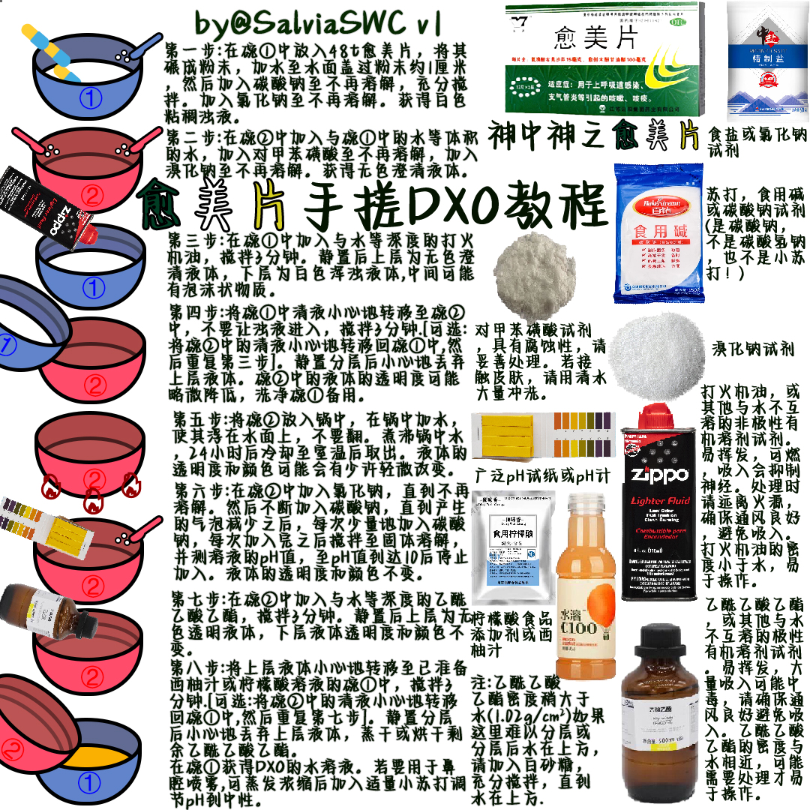

鼠尾草～🌿
@SalviaSWC
忘了补充了:第五步加热的时候,必须保持排气扇打开!
整个流程的最难点:第六步需要调pH至10,请小心不要加过头了,不然产率会降低
易手残点:在第三步和第七步中分液没分干净,会导致产率降低/产生杂质.
或者第五步中打翻碗,一切白干!
其他部分还是很简单的,除了第五步中的碳酸钠,其他试剂都是远远过量使用.

鼠尾草～🌿
@SalviaSWC
愈美片手搓DXO教程V1出了🥺
有问题可以在评论区问,窝都会回的喵🥰
已经搓出来DXO的推u可以评价一下药效嘛😋 https://t.co/dY73MZcjr4 https://t.co/pPwqrhpkSl